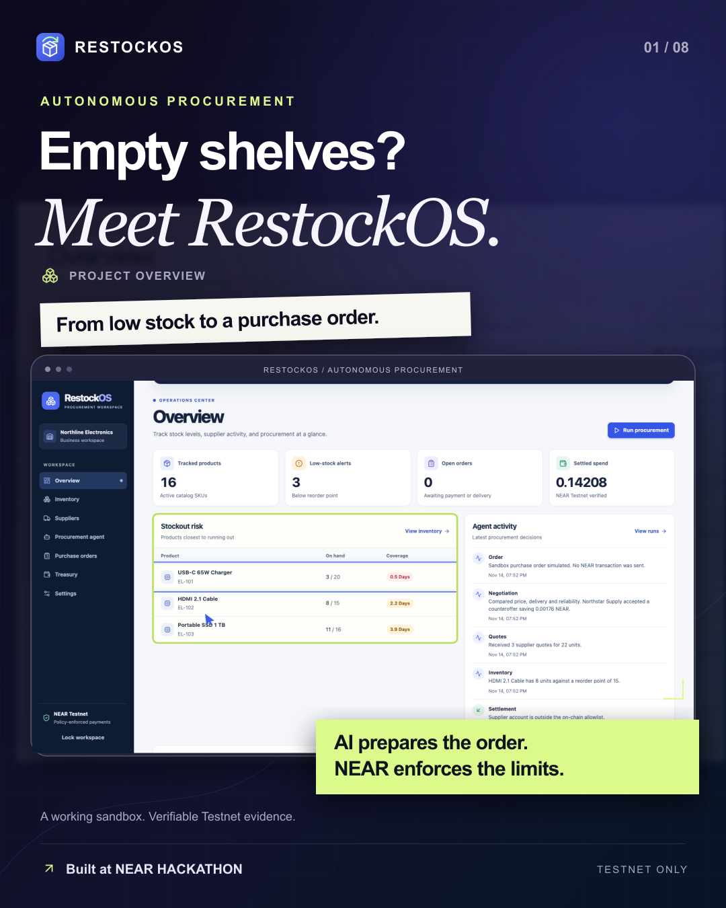
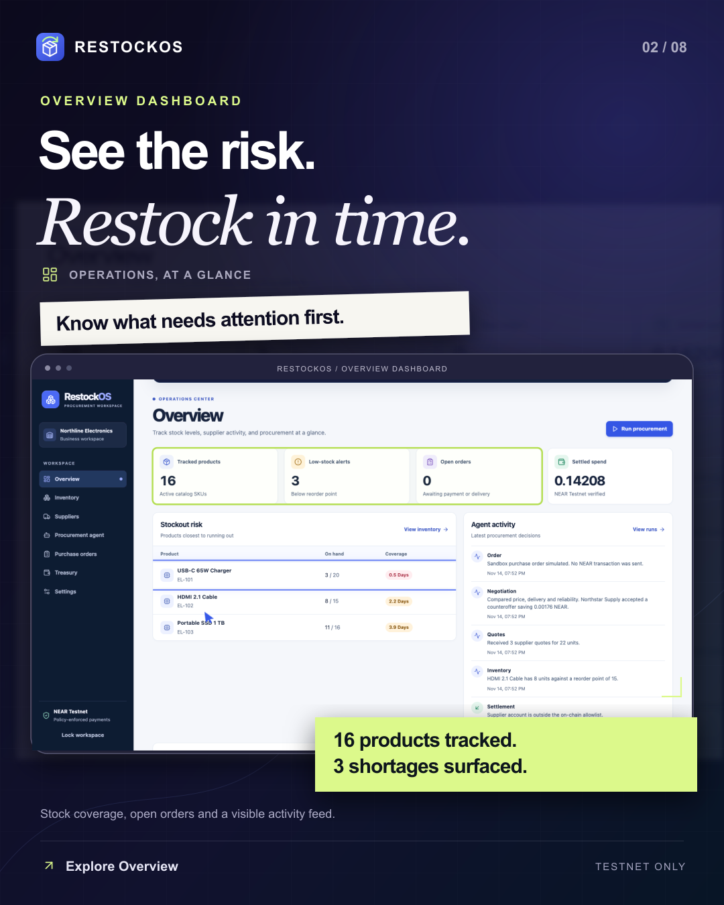
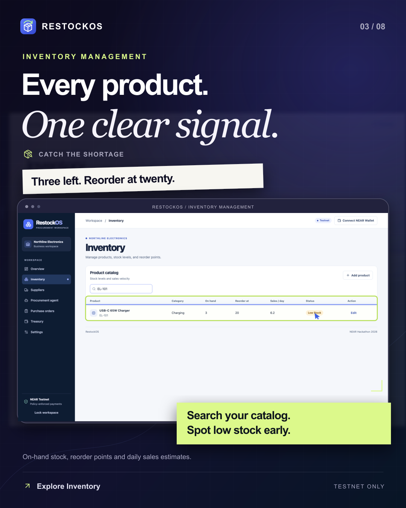
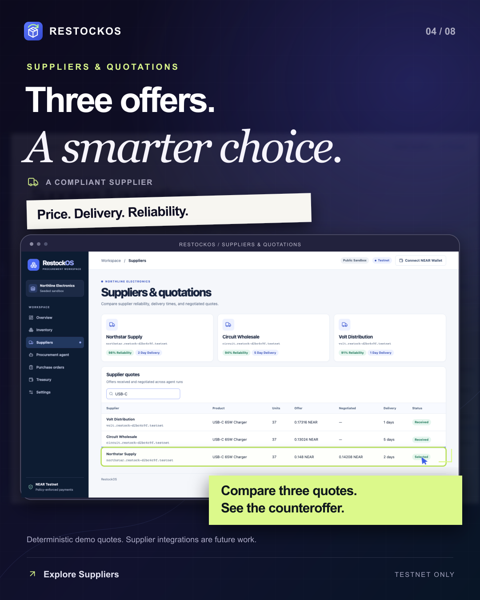
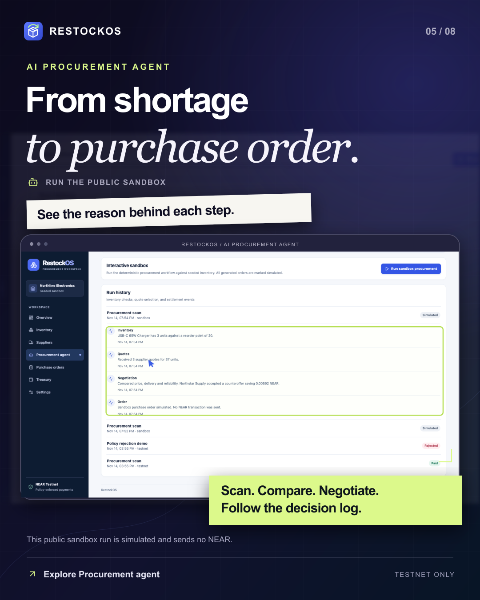
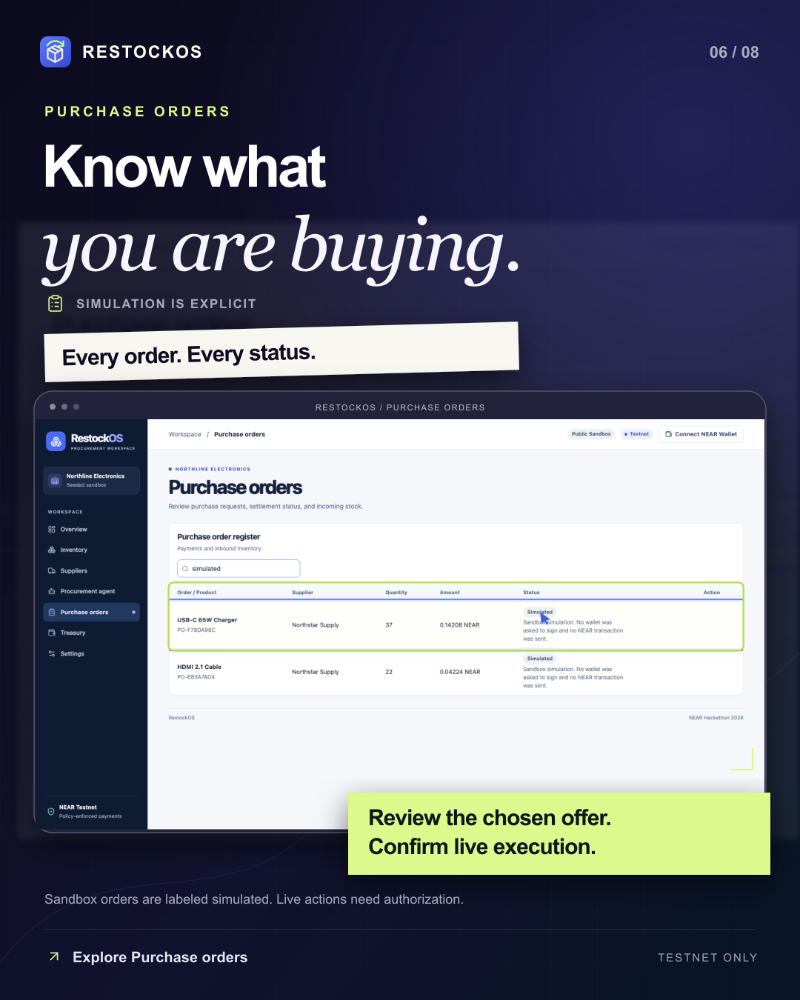
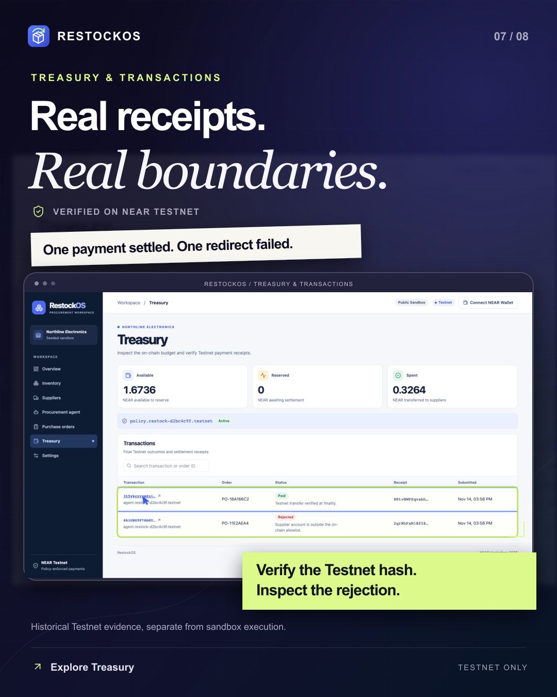
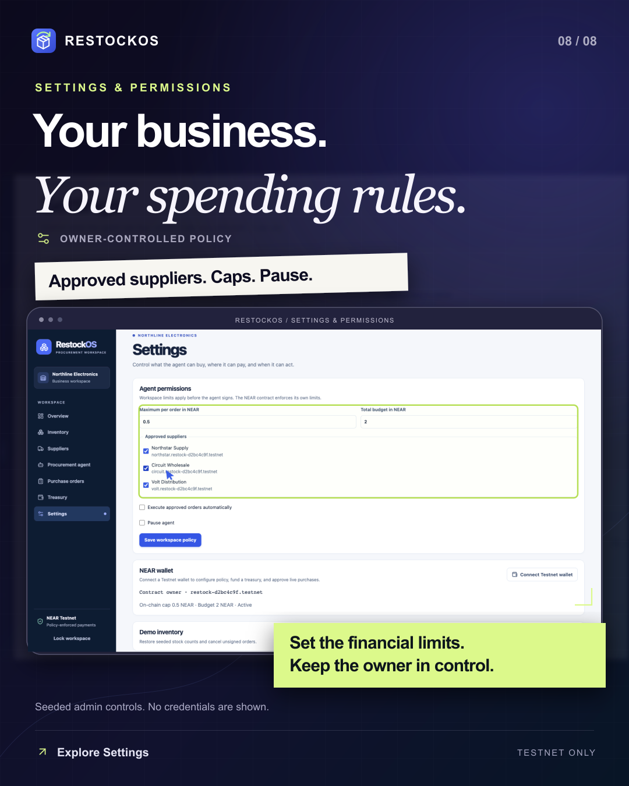

RestockOS feature cards
AUTONOMOUS PROCUREMENT: From low stock to a purchase order. AI prepares the order. NEAR enforces the limits. A working sandbox. Verifiable Testnet evidence.
OVERVIEW DASHBOARD: Know what needs attention first. 16 products tracked. 3 shortages surfaced. Stock coverage, open orders and a visible activity feed.
INVENTORY MANAGEMENT: Three left. Reorder at twenty. Search your catalog. Spot low stock early. On-hand stock, reorder points and daily sales estimates.
SUPPLIERS & QUOTATIONS: Price. Delivery. Reliability. Compare three quotes. See the counteroffer. Deterministic demo quotes. Supplier integrations are future work.
AI PROCUREMENT AGENT: See the reason behind each step. Scan. Compare. Negotiate. Follow the decision log. This public sandbox run is simulated and sends no NEAR.
PURCHASE ORDERS: Every order. Every status. Review the chosen offer. Confirm live execution. Sandbox orders are labeled simulated. Live actions need authorization.
TREASURY & TRANSACTIONS: One payment settled. One redirect failed. Verify the Testnet hash. Inspect the rejection. Historical Testnet evidence, separate from sandbox execution.
SETTINGS & PERMISSIONS: Approved suppliers. Caps. Pause. Set the financial limits. Keep the owner in control. Seeded admin controls. No credentials are shown.